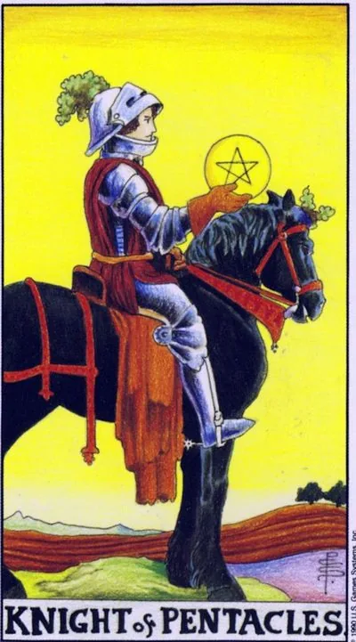

Младший аркан · Пентакли
XIIРыцарь пентаклей
Knight of Pentacles
Тяжёлая неторопливая поступь: надёжность, методичность и упрямое доведение дела до конца важнее скорости.
Архетип и основное значение
Всадник на тяжёлой рабочей лошади остановился и рассматривает монету в руке: ни скачки, ни битвы — движение плуга. Пока другие рыцари летят навстречу ветру, этот вспахивает поле за полем и знает цену каждому часу дороги. Рыцарь пентаклей — стихия Земли в движении: медленном, неудержимом, как ледник.
Это подтверждение стратегии черепахи против зайца: скучная регулярность обгоняет яркие рывки. И портрет человека-опоры, чьё слово можно не проверять договором. Дела, начатые под его знаком, заканчиваются; обещания держатся дольше настроений.
В быту
Список дел закрывается методично, пункт за пунктом. Карта благоприятствует уборкам, ремонтам, бумагам — всему, что требует усидчивости, а не вдохновения. Берите меньше пунктов, но выполняйте каждый до конца.
Работа и карьера
Вы тот сотрудник, которому доверяют критичное: сделает аккуратно и в срок. Период длинных проектов, где нужна выдержка, — аудиты, внедрения, отчётные циклы. Повышение придёт незаметно, через надёжность: лавры этого рыцаря достаются ему в конце сезона, зато навсегда.
Отношения
Чувства проверяются постоянством: этот партнёр не устраивает сюрпризов, зато приходит, когда обещал, и молча чинит то, что сломалось. Его романтика — прогретая машина утром и починенный кран. Одиноким стоит присмотреться к тихому человеку рядом: медлительность здесь не холод, а серьёзность намерений.
Здоровье
Телу полезен режим черепахи: умеренная ежедневная активность и лечение строго по схеме до последнего дня — устойчивый результат почти без травм. Единственное условие: отдых планируйте так же официально, как нагрузку, иначе дисциплина станет муштрой.
Эзотерическое значение
Рыцарь пентаклей — вол-сила стихии: терпение как действующая магия. Традиция видела в нём паломника, идущего пешком: каждый шаг — молитва. Карта помогает доводить ритуалы до конца; её формула: сила копится в том, что делается ежедневно, даже когда никто не смотрит.
Застревание в колее: движение есть, смысла нет — рутина съедает живое, а упрямство выдаёт себя за характер.
Архетип и основное значение
Конь стоит, всадник спит в седле: дорога кончилась, а никто не заметил. Перевёрнутый рыцарь пентаклей — верность пути после того, как путь потерял смысл. Со стороны он может выглядеть трудягой, но внутри уже никого нет: работа выполняется по памяти, отношения поддерживаются по привычке, перемены вызывают аллергию.
Два полюса, оба про остановку. Первый — лень и апатия: сроки висят, а основательность служит отговоркой. Второй — загнанная лошадь: трудоголизм без цели, где нельзя остановиться, чтобы не услышать тишину. Лечатся оба честным вопросом: куда я еду и хочу ли туда доехать?
В быту
Дни похожи как ступени: подъём, дела, экран, сон. Проекты заморожены на середине, новое встречается ворчанием, рутина стала не опорой, а укрытием. Разбейте колею маленьким непрактичным делом — ужином вне расписания, прогулкой в незнакомый район: живому нужен воздух.
Работа и карьера
На работе болото: задачи повторяются, роста нет, а страх смены места сильнее скуки. Возможно, рядом коллега-балласт или начальник-ретроград, топящий инициативы. Составьте честную опись: что здесь ещё растёт? Если ответ «ничего», готовьте выход заранее, не дожидаясь сокращения.
Отношения
Отношения законсервировались: всё исправно и никак. Разговоры свелись к быту, близость по расписанию, «и так нормально» прикрывает страх настоящего разговора. Упрямство одного блокирует назревшие перемены. Карта ведёт не к разрыву, а к беседе, которой вы оба боитесь больше, чем она того стоит.
Здоровье
Тело сигналит скукой: нагрузки свелись к механике, питание однообразно, недомогания списываются на возраст. Застой веса и тонуса — физическая версия этой карты. Добавьте нового: смените вид нагрузки, темп прогулок, сезонные продукты. Лечение не пускайте на автопилот: курс либо пройден, либо назначен заново.
Эзотерическое значение
Спящий всадник — сила Земли, ставшая инерцией: практики идут формально, обряды повторяются без огня, дух покидает формы. Пустая форма хуже открытого отказа — она притягивает нежить привычек. Средство — обновление обетов: переписать правила, выбросить мёртвые ритуалы, оставить те, что ещё дышат.
🌿 Как школа читает этот ранг
Основная идея
Спокойный прагматик. Он движется медленно, зато хорошо понимает, что хочет получить от своих усилий.
Как проявляется
В работе — мастер, умеющий строить, ремонтировать и поддерживать собственность. В деньгах — вопрос «что мне это даст?» и трезвый расчёт. В отношениях — физический комфорт, привычка и спокойная чувственность.
Теневая сторона
Прагматизм превращается в инерцию, упрямство и отказ от перемен.
Ключевые слова
прагматизм · выгода · комфорт · труд · консерватизм
📜 Развёрнуто — из лекции по рангу
Суть карты
прагматик из меркантильных побуждений — финансы, выгода, недвижимость. Единственный почти неподвижный всадник: спокойный вороной тяжеловоз. Оценивает ситуацию, «чтобы потерять меньше, приобрести больше».
Прямое положение
- Работа: рукастый — строит, ремонтирует, поддерживает собственность; знает цену труду и осязаемому итогу (сравнение с певцом: работа достойна уважения, если видны ресурс и результат); легко замотивировать высокой зарплатой; ценит усилия, себя, уважение, комфорт и качество; помоет машину сам ради экономии либо отдаст пажу, «который берёт меньше денег, чем я зарабатываю в час», — трезвый расчёт.
- Отношения: чувственник физики — цвет, свет, запах, тактильности; молча обнимет, пожалеет; секс — приятная физиология, не романтика; консерватор привычек, партнёра меняет лишь на заведомо более удобного; «удобно» и «выгодно» почти синонимы.
- Финансы: постоянно спрашивает «что мне это даст»; дом покупает расчётом (своя квартира дешевле аренды).
Негативное значение
• минусы земли — инерция, упрямство, традиционализм; «не столько жадный, сколько прижимистый» (прямое положение — домовитый, «всё в дом несёт»).
Акценты и фишки школы
- Цвета лошадей: чёрный у пентаклей — материальное, приземлённое; белый у кубков — возвышенные правильные эмоции, любовь к Богу; рыжий у жезлов — огонь страсти; светлый у мечей — чистый воздух и достоверность информации. Земля/огонь ближе к телу, мысли и эмоции должны быть возвышенными.
- Конь — символ врождённой активности, рыцарь управляет стихией; сокол на уздечке мечей — хищная охота: информация приносит ущерб или пользу; фаллическая символика жезла — привет Фрейду («душа горит — значит, хочется»).
- Направление скачка (активные влево, пассивные вправо, «от/к человеку») — цыганщина, «работает временами», он этим не пользуется.
- Буратино — образ человека, осваивающего четыре стихии: Арлекин — огонь, Мальвина — мечи/воздух, Артемон — земля (защитник своего), Пьеро — вода. Жанна д'Арк — не рыцарь, а королева/король жезлов: направляла желания людей. Манипуляции — дело королевы («женщина немного ведьма»), король просто объявляет: «царь трапезничать желает».
- Астрология: младшие арканы в зодиак — «натянуть сову на глобус», таблицы Золотой Зари «кривые»; система Юрия Хана (10 карт = 10 знаков, Водолей — паж+рыцарь, Рыбы — королева+король) рабочая, но авторская. Своё зодиакальное колесо старших арканов он объясняет через мифологию (совпало с Ханом независимо).
- Старшие арканы — архетипы и теология; младшие — устройство средневекового социума, «табель о рангах»; Золотая Заря черпала из тех же источников и знала меньше нас (1909–11), сейчас помогают психология и социология.
- Расклад: «Шумел камыш» — частный случай Шута; рыцарь мечей — резкий порыв ветра. Образы: четыре мушкетёра, Ghost Rider — байкер-экстремал намёком на жезлы, «Аббатство Даунтон» про иерархию «кто слуга».
- Диагностика в поле: раздражающая стихия — конфликт с ней внутри; работающий с удовольствием — рыцарь, страдающий от принуждения — паж; Маргарита у Булгакова хотела спокойствия — главная эмоция кубков (дзен, нирвана).
Ключевые слова
прагматика, выгода, привычка и традиции, физика/тактильность, трезвый расчёт.